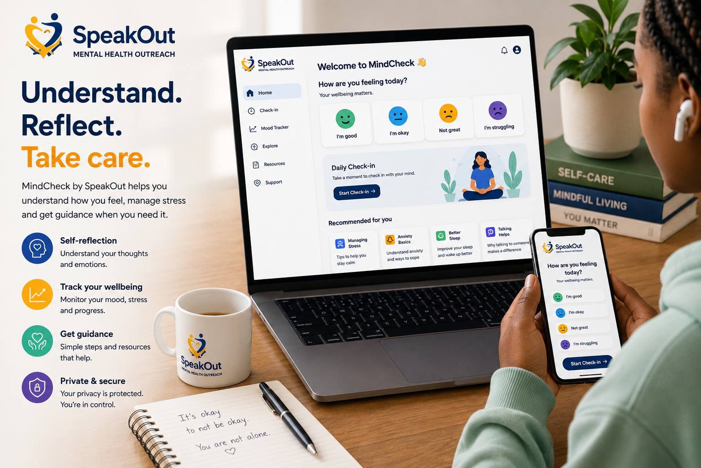
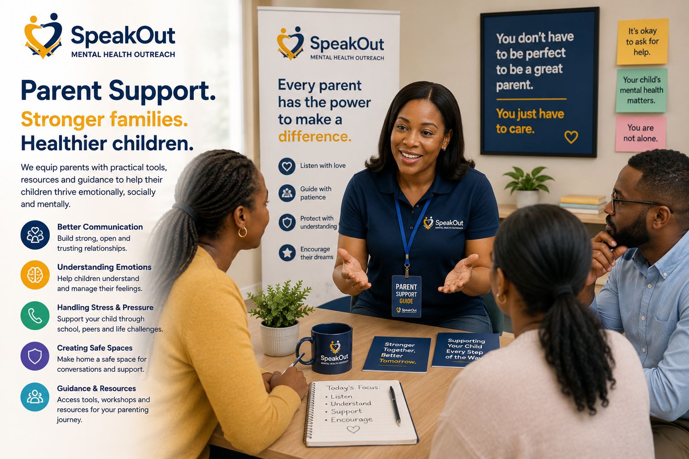
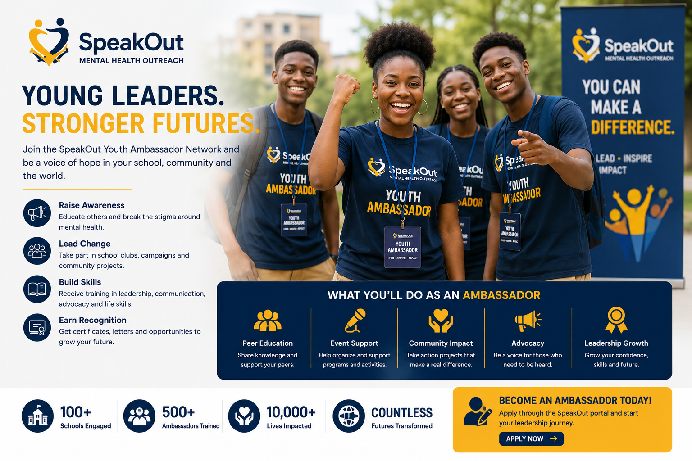
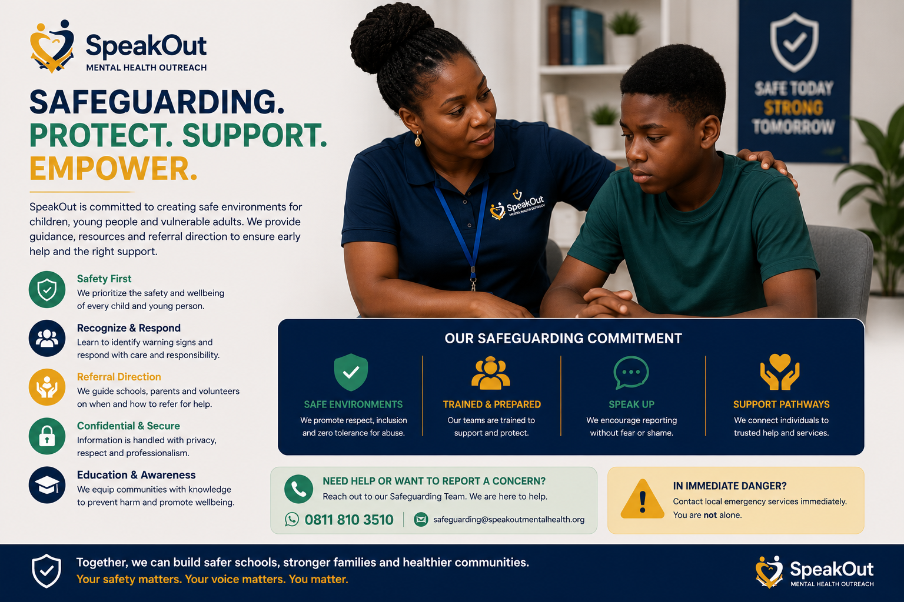

Awareness
Helping students and adults understand mental health signs, stress, emotional pressure and stigma.
SpeakOut programs help schools, students, parents, teachers and communities move beyond one-day mental health talks into structured support, digital learning, student leadership, safe conversations and long-term wellbeing systems.
The SpeakOut model is built around the people who shape a young person’s life: schools, parents, teachers, peers, community leaders and digital support systems.
Helping students and adults understand mental health signs, stress, emotional pressure and stigma.
Providing simple, culturally relevant learning that schools, parents and teachers can apply.
Creating safe conversations, referral awareness and trusted support pathways.
Linking wellbeing to leadership, skills, confidence, technology and future readiness.
We help schools and partners move through a clear process so the work is not scattered, vague or one-off.
We understand the school, audience, needs and program goals.
We recommend the best program pathway for students, staff or parents.
We agree on coordinators, structure, access and implementation plan.
We begin awareness, club activities, training or outreach.
Participants access resources, guidance, follow-up and learning pathways.
We track participation, feedback, outcomes and next steps.
Each program is designed as a practical entry point into the SpeakOut ecosystem.

A structured club model that helps schools keep mental health education active through student leadership, teacher coordination, parent engagement and regular wellbeing activities.

A digital wellbeing pathway that helps users reflect on stress, mood, emotional pressure and practical support steps in a private and low-pressure way.

SpeakHub Academy connects wellbeing with future-ready learning: coding, AI, robotics, digital skills, cloud, cybersecurity, design, leadership and home tutoring options.
Training that helps educators recognize warning signs, communicate supportively, document concerns and guide students toward appropriate support.

Practical parent education on listening, emotional safety, teenage stress, digital pressure, family communication and mental wellbeing at home.
Student-centered programs that connect mental health, leadership, purpose, resilience, life planning and responsible decision-making.

Awareness campaigns, youth dialogues, school visits, campus sessions, media education and community sensitization activities.

Training young people to become awareness champions, school club leaders, campaign volunteers and peer advocates.

Guidance for recognizing serious concerns, escalating urgent cases and connecting people to trusted adults or professional help.
SpeakOut programs are designed to move mental health education from theory into the places where young people actually live, learn and grow.
Students and adults learn to recognize signs of stress, isolation, pressure and emotional struggle.
Teachers, parents and peers learn how to listen, respond and support without shame or fear.
Families become part of the support system instead of being left outside the conversation.
Schools understand when and how to escalate serious concerns toward trusted help.
Young people become ambassadors, advocates and peer educators within their own communities.
School clubs and digital resources help the program continue after launch events.
A strong program does not end after a speech. It creates a structure where students continue learning, teachers keep noticing, parents become more involved and school leaders have a clearer support pathway.
That is the difference SpeakOut is building: a movement that educates, organizes and follows through.
Discuss Partnership
A school can register through the school registration page or contact SpeakOut directly for a partnership discussion.
Yes. Parent education is part of the SpeakOut ecosystem and can be delivered through workshops, resources and member access.
Yes. Teacher development focuses on warning signs, classroom support, referral awareness and teacher wellbeing.
MindCheck can be accessed online as a digital wellbeing pathway for self-reflection and early awareness.
Yes. Organizations can sponsor school clubs, events, resources, media programs or academy pathways.
Certificates can be issued for selected trainings, ambassador programs, workshops and structured learning pathways.
Whether you are a school, parent, sponsor, NGO, volunteer or community leader, there is a pathway for you inside the SpeakOut ecosystem.